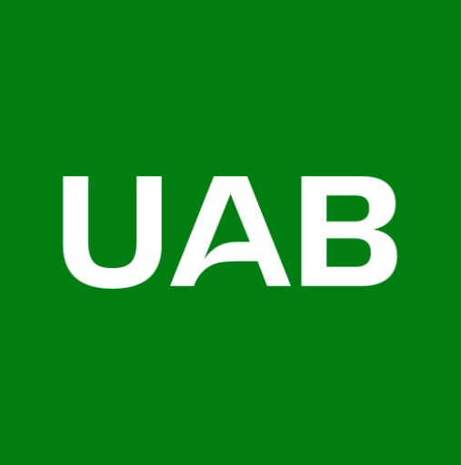
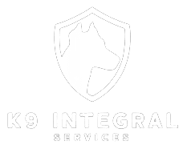

Investment Opportunity — 2025
Huellas que
protegen
El primer operador español de unidades caninas multidisciplinares formadas íntegramente desde protectoras de animales.
Seguridad · Terapia · Reinserción · Rescate
Descubrir
El primer operador español de unidades caninas multidisciplinares formadas íntegramente desde protectoras de animales.
Descubre en primera persona nuestra metodología, nuestro equipo y el impacto real que generamos en cada uno de los servicios que prestamos.
Seleccionamos perros de protectora según su temperamento y carácter, sin discriminar por raza. Lo que antes era un coste para el sistema, se convierte en un activo profesional. Coste de adquisición: prácticamente cero. Valor de mercado formado: 8.000–25.000€.
Seleccionados en protectoras por carácter, temperamento y capacidad de aprendizaje. Entrenados con refuerzo positivo hasta alcanzar el nivel profesional requerido en cada especialidad.


Un equipo multidisciplinar formado por adiestradores certificados, etólogos y veterinarios especializados en bienestar animal. La combinación de rigor técnico y vocación es la base de nuestro método.


Tres fuentes de ingresos combinadas que se retroalimentan: cada perro formado financia al siguiente candidato rescatado.
| Línea de servicio | Precio medio | Año 2 |
|---|---|---|
| Seguridad privada (servicio) | 3.200€/mes | 192.000€ |
| Terapia asistida (cesión) | 9.500€/unidad | 95.000€ |
| Detección (venta) | 22.000€/unidad | 110.000€ |
| Violencia género (contrato) | 2.400€/mes | 86.400€ |
| Programas reinserción | 45.000€/proyecto | 90.000€ |
| Formación y consulting | — | 40.000€ |
| Total proyectado año 2 | 613.400€ | |
La confianza de nuestros clientes es el mejor aval. Estas son algunas de las valoraciones de instituciones y empresas que ya trabajan con K9 Integral Services.
"Desde que integramos la unidad canina de K9 en nuestro centro de acogida, las mujeres usuarias han manifestado una mejora notable en su sensación de seguridad y bienestar emocional. El vínculo que se genera es inmediato y genuino."
"El rigor técnico del equipo de K9 nos sorprendió gratamente. Los perros procedentes de protectora rinden exactamente igual que los de criadero especializado, pero con un plus de resiliencia y carácter que se nota en el trabajo diario."
"El programa de reinserción con K9 ha transformado la dinámica del módulo. Los internos que participan en el adiestramiento muestran mayor responsabilidad, empatía y motivación. Los resultados han superado todas nuestras expectativas."
"Luna ha cambiado la vida de nuestra unidad de geriatría. Los pacientes con deterioro cognitivo se activan cuando ella llega. Es la primera vez en años que veo a algunos de ellos sonreír de esa manera. Renovamos sin dudarlo."
"Llevamos dos años con Thor en nuestra planta industrial y el resultado es impecable. Nivel de alerta, obediencia y comportamiento con el personal impecables. Además, el componente de adopción responsable ha reforzado nuestra imagen de RSC."
"Los niños del colegio esperan el día que viene Iris como si fuera una fiesta. La mejora en la comprensión lectora ha sido medible ya en el primer trimestre, pero lo que más nos ha sorprendido es el impacto en los alumnos con dificultades socioemocionales."
Trabajamos mano a mano con protectoras, centros de adiestramiento, universidades y administraciones públicas que comparten nuestra visión.


Buscamos inversores comprometidos con el impacto social y la rentabilidad sostenible. Ronda seed abierta — acceso a deck completo con modelo financiero detallado.